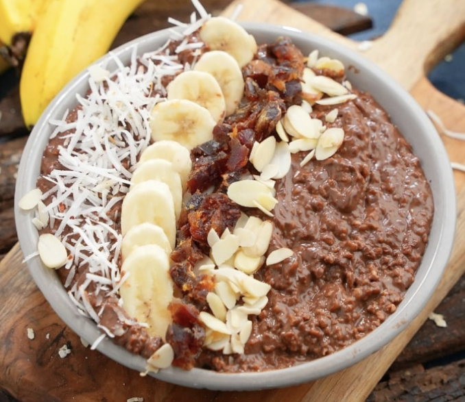

Chocolate Oats
If you are looking to eat something tasty and different from the usual breakfast items, choose
to make the Chocolate Oats. It is the best option you can think of. You just need four or five things to
make this dish!!! Oats, Milk, Cocoa Powder and Honey.
Ingredients
- 1 Cup Oats
- 400 ml Milk
- 1/2 Cup Water
- 3 tbsp Coco Powder
- 2 tbsp Honey
- 1/2 tbsp Vanilla essence
- 1/4 Cup Dry Coconut (Grated)
- 2 tbsp Almond Slivers
- 1 Ripe Banana (Cut into rounds)
- 3 Dates (Ripe)
Preparation
- Roast dry coconut (grated) and set aside.
- Boil Milk and water together.
- Take out a little hot milk in a cup and mix the Cocoa Powder. See that there are no lumps.
- Put in the Oats in the milk and boil till soft. Add the Cocoa and milk mixture to the cooked Oats. Cook
for 2-3 minutes. (Take care not to let the mixture thicken too much.)
- Take the pan off the stove and add Vanilla Essence, Salt and Honey. Mix well.
- Take the Oats into a serving bowl and serve hot with grated Coconut, Banana pieces, Almond slivers and
dates as topping.